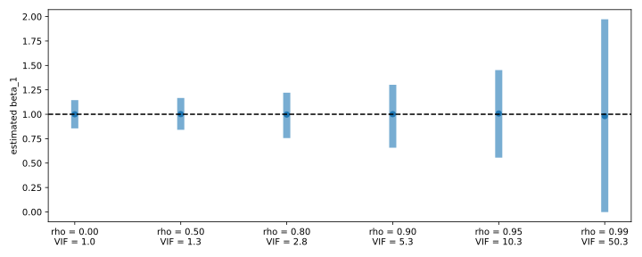
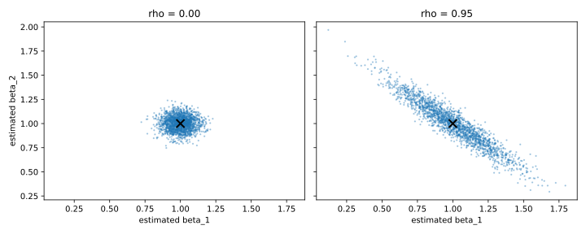

Articles · Econometrics
Multicollinearity: Correlated Regressors and the Precision of OLS
When two regressors are strongly correlated, the data contain little information on their separate effects. This article defines multicollinearity, derives its consequences for the variance of the OLS estimator, and measures them in a simulation where the true coefficients are known.
All estimates are computed from scratch with NumPy.
Perfect collinearity
In the multiple linear regression model
$$y = \beta_0 + \beta_1 x_1 + \beta_2 x_2 + \dots + \beta_k x_k + u ,$$perfect collinearity occurs when one regressor is an exact linear function of the others, for example \(x_2 = a + c\,x_1\). The matrix \(\mathbf X'\mathbf X\) is then singular (not invertible), so the OLS estimator
$$\hat{\boldsymbol\beta} = (\mathbf X'\mathbf X)^{-1}\mathbf X'\mathbf y$$cannot be computed: infinitely many coefficient vectors fit the data equally well. The rank of \(\mathbf X'\mathbf X\) shows it directly:
import numpy as np
def ols(y, *regressors):
X = np.column_stack([np.ones(len(y)), *regressors])
n, k = X.shape
XtX_inv = np.linalg.inv(X.T @ X)
b = XtX_inv @ X.T @ y # (X'X)^-1 X'y
u = y - X @ b # residuals
s2 = (u @ u) / (n - k) # error variance estimate
se = np.sqrt(s2 * np.diag(XtX_inv))
r2 = 1 - (u @ u) / ((y - y.mean()) @ (y - y.mean()))
return b, b / se, r2
rng = np.random.default_rng(0)
x1 = rng.standard_normal(100)
x2 = 2 + 3 * x1 # exact linear function of x1
X = np.column_stack([np.ones(100), x1, x2])
rank = np.linalg.matrix_rank(X.T @ X)
print(f"columns of X: {X.shape[1]}, rank of X'X: {rank}")columns of X: 3, rank of X'X: 2
Three columns, but rank two: one column carries no information that the others do not already contain. Perfect collinearity is ruled out by the assumption of no perfect collinearity.
Multicollinearity
Multicollinearity means that a regressor is highly, but not exactly, linearly related to the others. OLS is defined and all the standard assumptions hold. Its degree is measured by \(R_j^2\), the \(R^2\) of the auxiliary regression of \(x_j\) on the other regressors:
$$x_j = \gamma_0 + \sum_{h\neq j}\gamma_h x_h + v_j .$$\(R_j^2 = 0\) means no linear dependence; \(R_j^2 = 1\) is perfect collinearity. Multicollinearity lies in between.
The variance of the OLS slopes
Under the standard assumptions, including homoskedasticity, the sampling variance of each slope is
$$\mathrm{Var}(\hat\beta_j) = \frac{\sigma^2}{\mathrm{SST}_j\,(1 - R_j^2)} ,$$where \(\sigma^2 = \mathrm{Var}(u)\) is the error variance, estimated by \(\hat\sigma^2 = \frac{1}{n-k-1}\sum_i \hat u_i^2\); \(\mathrm{SST}_j = \sum_i (x_{ij}-\bar x_j)^2\) is the total variation in \(x_j\); and \(R_j^2\) is the share of \(x_j\) explained by the other regressors. \(R_j^2\) enters the variance only: under multicollinearity \(\mathbb E[\hat\beta_j] = \beta_j\) still holds.
The variance can be written as the variance with an uncorrelated regressor times the variance inflation factor (VIF):
$$\mathrm{Var}(\hat\beta_j) = \frac{\sigma^2}{\mathrm{SST}_j}\cdot\mathrm{VIF}_j , \qquad \mathrm{VIF}_j = \frac{1}{1 - R_j^2} .$$With two regressors, \(R_j^2 = \rho^2\), where \(\rho = \mathrm{Corr}(x_1, x_2)\). The square root of the VIF is the factor by which the standard error grows:
print(f"{'rho':>5s}{'R2_j':>9s}{'VIF':>8s}{'sqrt(VIF)':>11s}")
for rho in (0.0, 0.5, 0.8, 0.9, 0.95, 0.99):
vif = 1 / (1 - rho**2)
print(f"{rho:5.2f}{rho**2:9.4f}{vif:8.1f}{np.sqrt(vif):11.2f}")rho R2_j VIF sqrt(VIF) 0.00 0.0000 1.0 1.00 0.50 0.2500 1.3 1.15 0.80 0.6400 2.8 1.67 0.90 0.8100 5.3 2.29 0.95 0.9025 10.3 3.20 0.99 0.9801 50.3 7.09
The VIF stays close to one for moderate correlations and diverges as \(\rho \to 1\). Thresholds such as \(\mathrm{VIF} > 10\) are conventions, not tests: what matters is the variance itself, which also depends on \(\sigma^2\) and \(\mathrm{SST}_j\).
Simulation
We generate data from
$$y = 1 + 1\cdot x_1 + 1\cdot x_2 + u , \qquad \mathrm{Corr}(x_1, x_2) = \rho ,$$with \(x_1, x_2, u\) standard normal and \(n = 200\), and estimate the model by OLS with both regressors. For each \(\rho\) we draw 2,000 samples and compare the standard deviation of \(\hat\beta_1\) with the formula \(\sigma/\sqrt{n(1-\rho^2)}\):
B0, B1, B2, SIGMA = 1.0, 1.0, 1.0, 1.0
def simulate(rng, n, rho):
e1, e2 = rng.standard_normal(n), rng.standard_normal(n)
x1 = e1
x2 = rho * e1 + np.sqrt(1 - rho**2) * e2 # Corr(x1, x2) = rho
u = SIGMA * rng.standard_normal(n)
y = B0 + B1 * x1 + B2 * x2 + u
return x1, x2, y
rng = np.random.default_rng(2026)
R, N = 2000, 200
est = {}
print(f"{'rho':>5s}{'mean b1':>10s}{'sd formula':>12s}{'sd simulated':>14s}")
for rho in (0.0, 0.5, 0.8, 0.9, 0.95, 0.99):
b = np.empty((R, 2))
for i in range(R):
x1, x2, y = simulate(rng, N, rho)
b[i] = ols(y, x1, x2)[0][1:]
est[rho] = b
sd_formula = SIGMA / np.sqrt(N * (1 - rho**2))
print(f"{rho:5.2f}{b[:, 0].mean():10.3f}{sd_formula:12.4f}"
f"{b[:, 0].std():14.4f}")rho mean b1 sd formula sd simulated 0.00 1.002 0.0707 0.0722 0.50 1.001 0.0816 0.0807 0.80 0.995 0.1179 0.1183 0.90 0.995 0.1622 0.1640 0.95 1.003 0.2265 0.2299 0.99 0.995 0.5013 0.5007
The mean of \(\hat\beta_1\) equals the true value of 1 at every \(\rho\): the estimator is unbiased. Its standard deviation follows the formula, and is 3.2 times larger at \(\rho = 0.95\) and 6.9 times larger at \(\rho = 0.99\) than with uncorrelated regressors.
import matplotlib.pyplot as plt
fig, ax = plt.subplots(figsize=(10, 4))
for k, rho in enumerate(est):
lo, hi = np.percentile(est[rho][:, 0], [2.5, 97.5])
ax.vlines(k, lo, hi, color="C0", lw=8, alpha=0.6)
ax.plot(k, np.median(est[rho][:, 0]), "o", color="C0")
ax.axhline(B1, color="black", ls="--")
ax.set_xticks(range(len(est)),
[f"rho = {r:.2f}\nVIF = {1 / (1 - r**2):.1f}" for r in est])
ax.set_ylabel("estimated beta_1")
plt.tight_layout()
plt.show()
At \(\rho = 0.99\), 95% of the estimates lie between 0.00 and 1.97 for a true value of 1.
Covariance of the estimators
With standardised regressors, the two slope estimators are negatively correlated, \(\mathrm{Corr}(\hat\beta_1, \hat\beta_2) = -\rho\), while their sum becomes more precise as \(\rho\) grows:
$$\mathrm{Var}(\hat\beta_1 + \hat\beta_2) = \frac{2\sigma^2}{n(1+\rho)} .$$rng = np.random.default_rng(1)
pair = {}
for rho in (0.0, 0.95):
b = np.empty((R, 2))
for i in range(R):
x1, x2, y = simulate(rng, N, rho)
b[i] = ols(y, x1, x2)[0][1:]
pair[rho] = b
corr = np.corrcoef(b.T)[0, 1]
print(f"rho = {rho:.2f} corr(b1, b2) = {corr:+.2f} "
f"sd(b1) = {b[:, 0].std():.3f} "
f"sd(b1 + b2) = {b.sum(axis=1).std():.3f}")rho = 0.00 corr(b1, b2) = -0.00 sd(b1) = 0.071 sd(b1 + b2) = 0.101 rho = 0.95 corr(b1, b2) = -0.95 sd(b1) = 0.229 sd(b1 + b2) = 0.074
fig, axes = plt.subplots(1, 2, figsize=(10, 4), sharex=True, sharey=True)
for ax, rho in zip(axes, pair):
ax.scatter(pair[rho][:, 0], pair[rho][:, 1], s=2, alpha=0.3)
ax.plot(B1, B2, "x", color="black", ms=10, mew=2)
ax.set(title=f"rho = {rho:.2f}", xlabel="estimated beta_1")
axes[0].set_ylabel("estimated beta_2")
plt.tight_layout()
plt.show()
At \(\rho = 0.95\) the standard deviation of \(\hat\beta_1\) triples, while that of \(\hat\beta_1 + \hat\beta_2\) falls from 0.101 to 0.074. The data identify the combined effect precisely, but not its allocation between \(x_1\) and \(x_2\).
Omitting a correlated regressor
Dropping \(x_2\) removes the multicollinearity but introduces omitted variable bias. Here the slope of \(x_2\) on \(x_1\) equals \(\rho\), so
$$\mathbb E[\tilde\beta_1] = \beta_1 + \beta_2\,\rho .$$rng = np.random.default_rng(2027)
keep, drop = np.empty(R), np.empty(R)
for i in range(R):
x1, x2, y = simulate(rng, N, 0.95)
keep[i] = ols(y, x1, x2)[0][1]
drop[i] = ols(y, x1)[0][1]
print(f"y on x1, x2: mean {keep.mean():.3f} sd {keep.std():.3f}")
print(f"y on x1 only: mean {drop.mean():.3f} sd {drop.std():.3f}")y on x1, x2: mean 1.013 sd 0.230 y on x1 only: mean 1.949 sd 0.074
At \(\rho = 0.95\) the short regression has a standard deviation three times smaller, but it estimates \(\beta_1 + 0.95\,\beta_2 \approx 1.95\) instead of \(\beta_1 = 1\): lower variance, at the cost of bias.
Remedies
- Increase \(\mathrm{SST}_j(1-R_j^2)\): a larger sample, or a sample with more independent variation in \(x_j\).
- Estimate an identified combination, such as \(\beta_1 + \beta_2\), or impose a restriction justified by theory.
- No action if the collinearity involves only control variables: \(\mathrm{Var}(\hat\beta_j)\) depends only on \(R_j^2\), not on the correlation among the other regressors.
Takeaways
- Multicollinearity is a high but imperfect linear dependence among regressors, measured by \(R_j^2\). Only perfect collinearity violates an assumption.
- It inflates the variance, not the bias: \(\mathrm{Var}(\hat\beta_j) = \sigma^2\,\mathrm{VIF}_j/\mathrm{SST}_j\).
- Linear combinations remain identified: \(\beta_1 + \beta_2\) is estimated more precisely as \(\rho\) grows.
- Dropping a correlated regressor trades variance for bias.
Reference: J. M. Wooldridge, Introductory Econometrics: A Modern Approach, 7th ed., Cengage, 2020. All data are simulated.